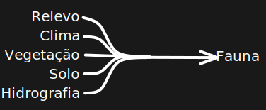

<!DOCTYPE html>
<html lang="en">
  <head>
    <meta charset="utf-8" />
    <meta name="viewport" content="width=device-width, initial-scale=1.0, maximum-scale=1.0, user-scalable=no" />

    <title></title>
    <link rel="stylesheet" href="dist/reveal.css" />
    <link rel="stylesheet" href="dist/theme/black.css" id="theme" />
    <link rel="stylesheet" href="plugin/highlight/zenburn.css" />
	<link rel="stylesheet" href="css/layout.css" />
	<link rel="stylesheet" href="plugin/customcontrols/style.css">

	<link rel="stylesheet" href="plugin/reveal-pointer/pointer.css" />


    <script defer src="dist/fontawesome/all.min.js"></script>

	<script type="text/javascript">
		var forgetPop = true;
		function onPopState(event) {
			if(forgetPop){
				forgetPop = false;
			} else {
				parent.postMessage(event.target.location.href, "app://obsidian.md");
			}
        }
		window.onpopstate = onPopState;
		window.onmessage = event => {
			if(event.data == "reload"){
				window.document.location.reload();
			}
			forgetPop = true;
		}

		function fitElements(){
			const itemsToFit = document.getElementsByClassName('fitText');
			for (const item in itemsToFit) {
				if (Object.hasOwnProperty.call(itemsToFit, item)) {
					var element = itemsToFit[item];
					fitElement(element,1, 1000);
					element.classList.remove('fitText');
				}
			}
		}

		function fitElement(element, start, end){

			let size = (end + start) / 2;
			element.style.fontSize = `${size}px`;

			if(Math.abs(start - end) < 1){
				while(element.scrollHeight > element.offsetHeight){
					size--;
					element.style.fontSize = `${size}px`;
				}
				return;
			}

			if(element.scrollHeight > element.offsetHeight){
				fitElement(element, start, size);
			} else {
				fitElement(element, size, end);
			}		
		}


		document.onreadystatechange = () => {
			fitElements();
			if (document.readyState === 'complete') {
				if (window.location.href.indexOf("?export") != -1){
					parent.postMessage(event.target.location.href, "app://obsidian.md");
				}
				if (window.location.href.indexOf("print-pdf") != -1){
					let stateCheck = setInterval(() => {
						clearInterval(stateCheck);
						window.print();
					}, 250);
				}
			}
	};


        </script>
  </head>
  <body>
    <div class="reveal">
      <div class="slides"><section  data-markdown><script type="text/template"><!-- .slide: class="drop" -->
<div class="" style="position: absolute; left: 0px; top: 0px; height: 700px; width: 960px; min-height: 700px; display: flex; flex-direction: column; align-items: center; justify-content: center" absolute="true">

# Domínios Morfoclimáticos e Fitogeográficos
</div>

<aside class="notes"><p>Olá, Essas são minha notas! aqui está tudo que eu falaria na apresentação.</p>
</aside></script></section><section  data-markdown><script type="text/template"><!-- .slide: class="drop" data-auto-animate="true" -->
<div class="" style="position: absolute; left: 0px; top: 0px; height: 700px; width: 960px; min-height: 700px; display: flex; flex-direction: column; align-items: center; justify-content: center" absolute="true">

#### O que é um Domínio Morfoclimáticos e Fitogeográficos (DMF)?
</div></script></section><section  data-markdown><script type="text/template"><!-- .slide: class="drop" data-auto-animate="true" -->
<div class="" style="position: absolute; left: 0px; top: 0px; height: 700px; width: 960px; min-height: 700px; display: flex; flex-direction: column; align-items: center; justify-content: center" absolute="true">

<style>
	.colored-text{
		 color: red;
	}
</style>

#### O que é um Domínio Morfoclimáticos e Fitogeográficos (DMF)?
- Relevo
- Clima
- Vegetação
- Solo
- Hidrografia
</div>

<aside class="notes"><p>Os Domínios Morfoclimáticos são grandes unidades territoriais delimitadas com base em características naturais predominantes, como <strong>relevo, clima, vegetação, solo e hidrografia</strong>.
O conceito foi desenvolvido pelo geógrafo Aziz Ab’Saber para facilitar o estudo e a compreensão da diversidade ambiental do Brasil.</p>
</aside></script></section><section  data-markdown><script type="text/template"><!-- .slide: class="drop" data-auto-animate="true" -->
<div class="" style="position: absolute; left: 0px; top: 0px; height: 700px; width: 960px; min-height: 700px; display: flex; flex-direction: column; align-items: center; justify-content: center" absolute="true">

#### Por que não considerar a fauna?
</div></script></section><section  data-markdown><script type="text/template"><!-- .slide: class="drop" data-auto-animate="true" -->
<div class="" style="position: absolute; left: 0px; top: 0px; height: 700px; width: 960px; min-height: 700px; display: flex; flex-direction: column; align-items: center; justify-content: center" absolute="true">

#### Por que não considerar a fauna?

</div>

<aside class="notes"><p>A fauna é uma consequência dos outros fatores, logo não pode ser considerado uma causa para o domínio ser assim.</p>
</aside></script></section><section  data-markdown><script type="text/template"><!-- .slide: class="drop" -->
<div class="" style="position: absolute; left: 0px; top: 0px; height: 700px; width: 960px; min-height: 700px; display: flex; flex-direction: column; align-items: center; justify-content: center" absolute="true">

# Domínios
- Amazônico  <!-- .element: class="fragment" -->
- Cerrado <!-- .element: style="color: transparent" -->
- Mares de Morros <!-- .element: style="color: transparent" -->
- Caatinga <!-- .element: style="color: transparent" -->
- Araucárias <!-- .element: style="color: transparent" -->
- Pradarias <!-- .element: style="color: transparent" -->
</div></script></section><section  data-markdown><script type="text/template"><!-- .slide: class="drop" data-background-image="Pasted image 20250106233103.png" -->
<div class="" style="position: absolute; left: 0px; top: 0px; height: 700px; width: 960px; min-height: 700px; display: flex; flex-direction: column; align-items: center; justify-content: center" absolute="true">

### Domínio Amazônico <!-- .element: style="color: black" -->
</div>

<aside class="notes"><ul>
<li><strong>Relevo</strong>: Predomínio de terras baixas e planícies aluviais, intercaladas por áreas de relevo suave.</li>
<li><strong>Clima</strong>: Equatorial quente e úmido, com chuvas abundantes e bem distribuídas ao longo do ano.</li>
<li><strong>Vegetação</strong>: Floresta densa, com árvores de grande porte, alta biodiversidade e folhas perenes. A floresta é dividida em estratos, com árvores emergentes, o dossel principal e o sub-bosque.</li>
<li><strong>Solo</strong>: Predominantemente pobre em nutrientes, mas a ciclagem rápida da matéria orgânica garante uma alta produtividade biológica.</li>
<li><strong>Hidrografia</strong>: Grande densidade de rios, incluindo a bacia Amazônica, a maior do mundo.</li>
</ul>
</aside></script></section><section  data-markdown><script type="text/template"><!-- .slide: class="drop" -->
<div class="" style="position: absolute; left: 0px; top: 0px; height: 700px; width: 960px; min-height: 700px; display: flex; flex-direction: column; align-items: center; justify-content: center" absolute="true">

# Domínios
- Amazônico
- Cerrado <!-- .element: class="fragment" -->
- Mares de Morros <!-- .element: style="color: transparent" -->
- Caatinga <!-- .element: style="color: transparent" -->
- Araucárias <!-- .element: style="color: transparent" -->
- Pradarias <!-- .element: style="color: transparent" -->
</div></script></section><section  data-markdown><script type="text/template"><!-- .slide: class="drop" data-background-image="Pasted image 20250106233600.png" -->
<div class="" style="position: absolute; left: 0px; top: 0px; height: 700px; width: 960px; min-height: 700px; display: flex; flex-direction: column; align-items: center; justify-content: center" absolute="true">

### Domínio do Cerrado <!-- .element: style="color: black" -->
</div>

<aside class="notes"><ul>
<li><strong>Relevo</strong>: Planaltos extensos e chapadas.</li>
<li><strong>Clima</strong>: Tropical sazonal, com uma estação chuvosa e outra seca bem definidas.</li>
<li><strong>Vegetação</strong>: Predominância de savanas, com gramíneas, arbustos e árvores de pequeno porte adaptadas ao fogo e à seca. As árvores possuem troncos retorcidos e cascas grossas.</li>
<li><strong>Solo</strong>: Ácido, com baixos níveis de nutrientes e alta presença de alumínio.</li>
<li><strong>Hidrografia</strong>: Nascente de importantes rios brasileiros, como o São Francisco, o Tocantins e o Paraná.</li>
</ul>
</aside></script></section><section  data-markdown><script type="text/template"><!-- .slide: class="drop" -->
<div class="" style="position: absolute; left: 0px; top: 0px; height: 700px; width: 960px; min-height: 700px; display: flex; flex-direction: column; align-items: center; justify-content: center" absolute="true">

# Domínios
- Amazônico
- Cerrado
- Mares de Morros <!-- .element: class="fragment" -->
- Caatinga <!-- .element: style="color: transparent" -->
- Araucárias <!-- .element: style="color: transparent" -->
- Pradarias <!-- .element: style="color: transparent" -->
</div></script></section><section  data-markdown><script type="text/template"><!-- .slide: class="drop" data-background-image="Pasted image 20250106234118.png" -->
<div class="" style="position: absolute; left: 0px; top: 0px; height: 700px; width: 960px; min-height: 700px; display: flex; flex-direction: column; align-items: center; justify-content: center" absolute="true">

### Domínio dos Mares De Morros <!-- .element: style="color: black" -->
</div>

<aside class="notes"><ul>
<li><strong>Relevo</strong>: Relevo ondulado, com morros em formato arredondado, típico da Zona da Mata e regiões próximas ao litoral.</li>
<li><strong>Clima</strong>: Tropical úmido, com chuvas bem distribuídas ao longo do ano.</li>
<li><strong>Vegetação</strong>: Mata Atlântica, originalmente muito densa e rica em biodiversidade, mas altamente desmatada ao longo da história.</li>
<li><strong>Solo</strong>: Relativamente fértil, mas sujeito à erosão devido ao desmatamento.</li>
<li><strong>Hidrografia</strong>: Rios curtos e caudalosos, que muitas vezes deságuam no litoral.</li>
</ul>
</aside></script></section><section  data-markdown><script type="text/template"><!-- .slide: class="drop" -->
<div class="" style="position: absolute; left: 0px; top: 0px; height: 700px; width: 960px; min-height: 700px; display: flex; flex-direction: column; align-items: center; justify-content: center" absolute="true">

# Domínios
- Amazônico
- Cerrado
- Mares de Morros
- Caatinga <!-- .element: class="fragment" -->
- Araucárias <!-- .element: style="color: transparent" -->
- Pradarias <!-- .element: style="color: transparent" -->
</div></script></section><section  data-markdown><script type="text/template"><!-- .slide: class="drop" data-background-image="Pasted image 20250106234415.png" -->
<div class="" style="position: absolute; left: 0px; top: 0px; height: 700px; width: 960px; min-height: 700px; display: flex; flex-direction: column; align-items: center; justify-content: center" absolute="true">

### Domínio da Caatinga <!-- .element: style="color: black" -->
</div>

<aside class="notes"><ul>
<li><strong>Relevo</strong>: Depressões intercaladas com áreas de relevo suave.</li>
<li><strong>Clima</strong>: Semiárido, com chuvas escassas e irregulares. A evaporação é muito superior à precipitação.</li>
<li><strong>Vegetação</strong>: Xerófila, com cactáceas, arbustos espinhosos e árvores de pequeno porte adaptadas à seca prolongada. Muitas plantas possuem folhas reduzidas ou caem durante a estiagem.</li>
<li><strong>Solo</strong>: Raso, pedregoso e pobre em matéria orgânica.</li>
<li><strong>Hidrografia</strong>: Rios intermitentes, que secam durante a estação seca, formando leitos temporários.</li>
</ul>
</aside></script></section><section  data-markdown><script type="text/template"><!-- .slide: class="drop" -->
<div class="" style="position: absolute; left: 0px; top: 0px; height: 700px; width: 960px; min-height: 700px; display: flex; flex-direction: column; align-items: center; justify-content: center" absolute="true">

# Domínios
- Amazônico
- Cerrado
- Mares de Morros
- Caatinga
- Araucárias <!-- .element: class="fragment" -->
- Pradarias <!-- .element: style="color: transparent" -->
</div></script></section><section  data-markdown><script type="text/template"><!-- .slide: class="drop" data-background-image="Pasted image 20250106234753.png" -->
<div class="" style="position: absolute; left: 0px; top: 0px; height: 700px; width: 960px; min-height: 700px; display: flex; flex-direction: column; align-items: center; justify-content: center" absolute="true">

### Domínio das Araucárias <!-- .element: style="color: black" -->
</div>

<aside class="notes"><ul>
<li><strong>Relevo</strong>: Planaltos e áreas de altitudes mais elevadas.</li>
<li><strong>Clima</strong>: Subtropical úmido, com estações bem definidas e temperaturas mais amenas.</li>
<li><strong>Vegetação</strong>: Floresta de araucárias, composta principalmente pelo pinheiro-do-paraná (Araucaria angustifolia) e espécies associadas.</li>
<li><strong>Solo</strong>: Relativamente fértil, especialmente nas áreas de terra roxa.</li>
<li><strong>Hidrografia</strong>: Rios perenes e bem distribuídos.</li>
</ul>
</aside></script></section><section  data-markdown><script type="text/template"><!-- .slide: class="drop" -->
<div class="" style="position: absolute; left: 0px; top: 0px; height: 700px; width: 960px; min-height: 700px; display: flex; flex-direction: column; align-items: center; justify-content: center" absolute="true">

# Domínios
- Amazônico
- Cerrado
- Mares de Morros
- Caatinga
- Araucárias
- Pradarias <!-- .element: class="fragment" -->
</div></script></section><section  data-markdown><script type="text/template"><!-- .slide: class="drop" data-background-image="Pasted image 20250106235210.png" -->
<div class="" style="position: absolute; left: 0px; top: 0px; height: 700px; width: 960px; min-height: 700px; display: flex; flex-direction: column; align-items: center; justify-content: center" absolute="true">

### Domínio das Pradarias <!-- .element: style="color: black" -->
</div>

<aside class="notes"><ul>
<li><strong>Relevo</strong>: Relevo suave, com coxilhas (colinas baixas) e áreas de planície.</li>
<li><strong>Clima</strong>: Temperado, com invernos frios e verões moderados.</li>
<li><strong>Vegetação</strong>: Campos abertos, com predomínio de gramíneas e vegetação rasteira, formando os Pampas.</li>
<li><strong>Solo</strong>: Fértil, ideal para a agropecuária, mas suscetível à erosão.</li>
<li><strong>Hidrografia</strong>: Rios de pequeno porte e algumas áreas de banhados.</li>
</ul>
</aside></script></section><section  data-markdown><script type="text/template"><!-- .slide: class="drop" -->
<div class="" style="position: absolute; left: 0px; top: 0px; height: 700px; width: 960px; min-height: 700px; display: flex; flex-direction: column; align-items: center; justify-content: center" absolute="true">

Obrigado!
</div></script></section></div>
    </div>

    <script src="dist/reveal.js"></script>

    <script src="plugin/markdown/markdown.js"></script>
    <script src="plugin/highlight/highlight.js"></script>
    <script src="plugin/zoom/zoom.js"></script>
    <script src="plugin/notes/notes.js"></script>
    <script src="plugin/math/math.js"></script>
	<script src="plugin/mermaid/mermaid.js"></script>
	<script src="plugin/chart/chart.min.js"></script>
	<script src="plugin/chart/plugin.js"></script>
	<script src="plugin/customcontrols/plugin.js"></script>
	<script src="plugin/reveal-pointer/pointer.js"></script>

    <script>
      function extend() {
        var target = {};
        for (var i = 0; i < arguments.length; i++) {
          var source = arguments[i];
          for (var key in source) {
            if (source.hasOwnProperty(key)) {
              target[key] = source[key];
            }
          }
        }
        return target;
      }

	  function isLight(color) {
		let hex = color.replace('#', '');

		// convert #fff => #ffffff
		if(hex.length == 3){
			hex = `${hex[0]}${hex[0]}${hex[1]}${hex[1]}${hex[2]}${hex[2]}`;
		}

		const c_r = parseInt(hex.substr(0, 2), 16);
		const c_g = parseInt(hex.substr(2, 2), 16);
		const c_b = parseInt(hex.substr(4, 2), 16);
		const brightness = ((c_r * 299) + (c_g * 587) + (c_b * 114)) / 1000;
		return brightness > 155;
	}

	var bgColor = getComputedStyle(document.documentElement).getPropertyValue('--r-background-color').trim();
	var isLight = isLight(bgColor);

	if(isLight){
		document.body.classList.add('has-light-background');
	} else {
		document.body.classList.add('has-dark-background');
	}

      // default options to init reveal.js
      var defaultOptions = {
        controls: true,
        progress: true,
        history: true,
        center: true,
        transition: 'default', // none/fade/slide/convex/concave/zoom
        plugins: [
          RevealMarkdown,
          RevealHighlight,
          RevealZoom,
          RevealNotes,
          RevealMath.MathJax3,
		  RevealMermaid,
		  RevealChart,
		  RevealCustomControls,
	      RevealPointer,
        ],


    	allottedTime: 120 * 1000,

		mathjax3: {
			mathjax: 'plugin/math/mathjax/tex-mml-chtml.js',
		},
		markdown: {
		  gfm: true,
		  mangle: true,
		  pedantic: false,
		  smartLists: false,
		  smartypants: false,
		},

		mermaid: {
			theme: isLight ? 'default' : 'dark',
		},

		customcontrols: {
			controls: [
			]
		},
      };

      // options from URL query string
      var queryOptions = Reveal().getQueryHash() || {};

      var options = extend(defaultOptions, {"width":960,"height":700,"margin":0.04,"controls":true,"progress":true,"slideNumber":false,"transition":"slide","transitionSpeed":"default"}, queryOptions);
    </script>

    <script>
      Reveal.initialize(options);
    </script>
  </body>

  <!-- created with Advanced Slides -->
</html>
